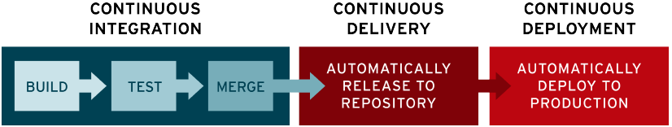
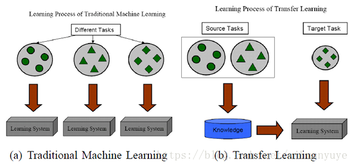
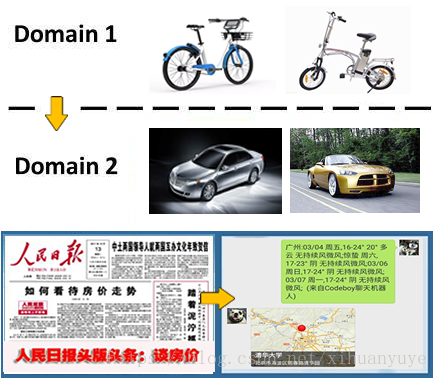
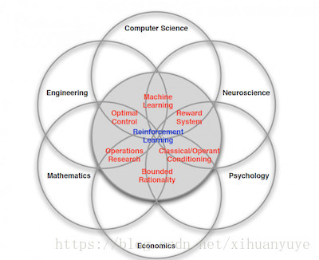
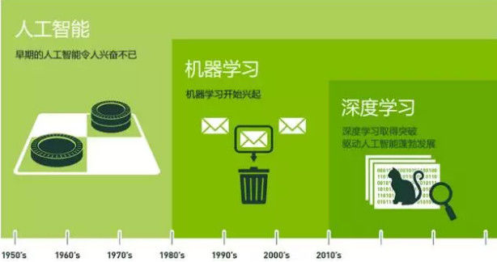
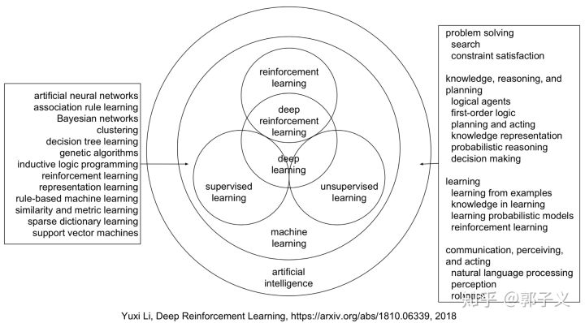

10月14日
笔记
甘特图
甘特图（Gantt chart）又称为横道图、条状图(Bar chart)。其通过条状图来显示项目，进度，和其他时间相关的系统进展的内在关系随着时间进展的情况。以提出者亨利·劳伦斯·甘特（Henry Laurence Gantt）先生的名字命名。
含义
甘特图以图示通过活动列表和时间刻度表示出特定项目的顺序与持续时间。一条线条图，横轴表示时间，纵轴表示项目，线条表示期间计划和实际完成情况。直观表明计划何时进行，进展与要求的对比。便于管理者弄清项目的剩余任务，评估工作进度。
甘特图是以作业排序为目的，将活动与时间联系起来的最早尝试的工具之一，帮助企业描述工作中心、超时工作等资源的使用。
甘特图包含以下三个含义：
1、以图形或表格的形式显示活动；
2、通用的显示进度的方法；
3、构造时含日历天和持续时间，不将周末节假算在进度内。
简单、醒目、便于编制，在管理中广泛应用。
甘特图按内容不同，分为计划图表、负荷图表、机器闲置图表、人员闲置图表和进度表五种形式。
燃尽图
燃尽图也叫燃烧图，是罕见的敏捷度量。它的全称是“总剩余时间的燃尽图”，就是本次迭代中，所有故事（或拆分的任务，以下仅称故事）的剩余时间总和，随日期的变化而逐日递减的图。
燃尽图是在项目完成之前，对需要完成的工作的一种可视化表示。燃尽图有一个Y轴（工作）和X轴（时间）。理想情况下，该图表是一个向下的曲线，随着剩余工作的完成，“烧尽”至零。燃尽图向项目组成员和企业主提供工作进展的一个公共视图。这个词常常用于敏捷编程。(如下：燃尽图示意图)

燃尽图横坐标为工作日期，纵坐标估计剩余的工作量，每个点代表了在那一天估计剩余的工作量，通过折线依次连接起所有的点形成为估计剩余工作量的趋势线。另外还有一条控制线，为最初的估计工作量到结束日期的连线，一般用不同的颜色画上边的两根线。
Confluence (企业开发协同文档)
Confluence是一个专业的企业知识管理与协同软件，也可以用于构建企业wiki。使用简单，但它强大的编辑和站点管理特征能够帮助团队成员之间共享信息、文档协作、集体讨论，信息推送。
Docker
Docker 是一个开源的应用容器引擎，让开发者可以打包他们的应用以及依赖包到一个可移植的镜像中，然后发布到任何流行的 Linux 或 Windows 机器上，也可以实现虚拟化。容器是完全使用沙箱机制，相互之间不会有任何接口。
Devops
简介
DevOps 一词的来自于 Development 和 Operations 的组合，突出重视软件开发人员和运维人员的沟通合作，通过自动化流程来使得软件构建、测试、发布更加快捷、频繁和可靠。DevOps 其实包含了三个部分：开发、测试和运维。换句话 DevOps 希望做到的是软件产品交付过程中IT工具链的打通，使得各个团队减少时间损耗，更加高效地协同工作。
DevOps 工具链
- 项目管理（PM）：Jira
- 代码管理：GitLab
- 持续集成（CI）：GitLab CI
- 镜像仓库：VMware Harbor
- 容器：Docker
- 容器平台： Rancher
- 镜像扫描：Clairctl
- 编排：Kubernetes
- 服务注册与发现：etcd
- 脚本语言：python
- 日志管理：EFK
- 系统监控：prometheus
- Web服务器：Nginx
- 数据库：MySQL redis
DevOps 架构
DevOps 流水线（工具链）

DevOps环境部署
具体安装步骤可参考链接：王教授-DevOps平台
CI/CD 管道
持续集成Continuous Integration（CI）和持续交付Continuous Delivery（CD）
CI/CD 管道是为了交付新版本的软件而必须执行的一系列步骤。持续集成/持续交付（CI/CD）管道是一套专注于使用 DevOps 或 站点可靠性工程（SRE）方法来改进软件交付的实践。
CI/CD 管道加入了监控和自动化来改进应用开发过程，尤其是在集成和测试阶段以及交付和部署过程中。尽管可以手动执行 CI/CD 管道的每个步骤，但 CI/CD 管道的真正价值在于自动化。
持续交付管道
将源代码转换为可发布产品的多个不同的任务task和作业job通常串联成一个软件“管道”，一个自动流程成功完成后会启动管道中的下一个流程。这些管道有许多不同的叫法，例如持续交付管道、部署管道和软件开发管道。大体上讲，程序管理者在管道执行时管理管道各部分的定义、运行、监控和报告。
CI/CD 管道的要素
构成 CI/CD 管道的步骤被划分为不同的任务子集，称之为管道阶段。典型的管道阶段包括：
- 构建 - 进行应用编译的阶段。
- 测试 - 进行代码测试的阶段。在此阶段采用自动化可以节省时间和精力。
- 发布 - 将应用交付到存储库的阶段。
- 部署 - 将代码部署到生产环境中的阶段。
- 验证与合规 - 验证版本的步骤取决于企业的需求。镜像安全性扫描工具（例如 Clair）可通过将镜像与已知漏洞（CVE） 进行比较，以此来确保镜像的质量。

这并不是管道阶段的完整列表。此列表只列举了一些常见阶段。具体管道会因您所在组织的要求而异。
容器与 CI/CD 管道
传统的 CI/CD 系统是为使用虚拟机的管道而设计的
2020 年必备的几个 DevOps 工具
Octave
Octave是一款用于数值计算和绘图的开源软件。和Matlab一样,Octave 尤其精于矩阵运算:求解联立方程组、计算矩阵特征值和特征向量等等。
Host文件
简介
Hosts文件是一个没有扩展名的系统文件，它的主要作用是能加快域名解析，还可以屏蔽网站等。
Hosts文件主要作用是定义IP地址和主机名的映射关系，是一个映射IP地址和主机名的规定。可以用文本文件打开！当用户在浏览器中输入一个需要登录的网址时，系统会首先自动从Hosts文件中寻找对应的IP地址，一旦找到，浏览器会立即打开对应网页，如果没有找到，则浏览器会将网址提交DNS服务器进行IP地址解析。这也是提高快速打开网页的方法！
位置
C:\Windows\System32\drivers\etc
时区
由于世界各国家与地区经度不同，地方时也有所不同，因此会划分为不同的时区。
正式的时区划分包括24个时区，每一时区由一个英文字母表示。每隔经度15°划分一个时区，有一个例外，每个时区有一条中央子午线；例如，GMT属于“z”区，因此其时间后通常添加后缀“Z”（口语中用后缀“Zulu”）
地球是自西向东自转，东边比西边先看到太阳，东边的时间也比西边的早。东边时刻与西边时刻的差值不仅要以时计，而且还要以分和秒来计算，这给人们带来不便。
为了克服时间上的混乱，1884年在华盛顿召开的一次国际经度会议（又称国际子午线会议）上，规定将全球划分为24个时区（东、西各12个时区）。
每个时区横跨经度15度，时间正好是1小时。
例如，中国东8区的时间总比泰国东7区的时间早1小时，而比日本东9区的时间晚1小时。因此，出国旅行的人，必须随时调整自己的手表，才能和当地时间相一致。凡向西走，每过一个时区，就要把表拨慢1小时（比如2点拨到1点）；凡向东走，每过一个时区，就要把表拨快1小时（比如1点拨到2点）。并且规定英国（格林尼治天文台旧址）为本初子午线，即零度经线。
Clojure
Clojure是一种运行在Java平台上的 Lisp 方言，Lisp是一种以表达性和功能强大著称的编程语言，但人们通常认为它不太适合应用于一般情况，而Clojure的出现彻底改变了这一现状。如今，在任何具备 Java 虚拟机的地方，您都可以利用 Lisp 的强大功能。
结构化编程
结构化程式设计（英语：Structured programming），一种编程典范。它采用子程序、程式码区块（英语：block structures）、for循环以及while循环等结构，来取代传统的 goto。希望借此来改善计算机程序的明晰性、品质以及开发时间，并且避免写出面条式代码。
函数式编程
函数式编程是种编程方式，它将电脑运算视为函数的计算。函数编程语言最重要的基础是λ演算（lambda calculus），而且λ演算的函数可以接受函数当作输入（参数）和输出（返回值）。
和指令式编程相比，函数式编程强调函数的计算比指令的执行重要。
和过程化编程相比，函数式编程里函数的计算可随时调用。
指令式编程
命令式编程（英语：Imperative programming），是一种描述计算机所需作出的行为的编程典范。几乎所有计算机的硬件工作都是命令式的；几乎所有计算机的硬件都是设计来运行机器码，使用命令式的风格来写的。较高阶的命令式编程语言使用变量和更复杂的语句，但仍依从相同的典范。虽非计算机程序，但与命令式编程有相似的风格：每步都是指令，有形的世界控制情况。因为命令式编程的基础观念，不但概念上比较熟悉，而且较容易具体表现于硬件，所以大部分的编程语言都是命令式的。
过程化程序设计语言
过程化程序设计语言：即第三代程序设计语言，指需要由编写程序的人员一步一步地安排好程序的执行过程的程序设计语言。SQL是高级的非过程化编程语言，允许用户在高层数据结构上工作。它不要求用户指定对数据的存放方法，也不需要用户了解具体的数据存放方式，所以具有完全不同底层结构的不同数据库系统可以使用相同的SQL语言作为数据输入与管理的接口。它以记录集合作为操作对象，所有SQL语句接受集合作为输入，返回集合作为输出的语句
字节码
字节码（Bytecode）是一种包含执行程序、由一序列 op 代码/数据对 组成的二进制文件。字节码是一种中间码，它比机器码更抽象，需要直译器转译后才能成为机器码的中间代码。
通常情况下它是已经经过编译，但与特定机器码无关。字节码通常不像源码一样可以让人阅读，而是编码后的数值常量、引用、指令等构成的序列。
字节码主要为了实现特定软件运行和软件环境、与硬件环境无关。字节码的实现方式是通过编译器和虚拟机器。编译器将源码编译成字节码，特定平台上的虚拟机器将字节码转译为可以直接执行的指令。字节码的典型应用为Java bytecode。
字节码在运行时通过JVM（JAVA虚拟机）做一次转换生成机器指令，因此能够更好的跨平台运行。
总结：字节码是一种中间状态（中间码）的二进制代码（文件）。需要直译器转译后才能成为机器码。
Cocktail party effect
The cocktail party effect is the phenomenon of the brain’s ability to focus one’s auditory attention(an effect of selective attention in the brain) on a particular stimulus while filtering out a range of other stimuli, as when a partygoer can focus on a single conversation in a noisy room. Listeners have the ability to both segregate different stimuli into different streams, and subsequently decide which streams are most pertinent to them. Thus, it has been proposed that one’s sensory memory subconsciously parses all stimuli and identifies discrete pieces of information by classifying them by salience. This effect is what allows most people to “tune into” a single voice and “tune out” all others. It may also describe a similar phenomenon that occurs when one may immediately detect words of importance originating from unattended stimuli, for instance hearing one’s name among a wide range of auditory input.
人工智能
人工智能
人工智能指由人类制造出的机器表现出的智能。这是一个非常大的范围，长远目标是让机器实现类人智能。 不过目前我们还在非常非常初级的阶段，甚至都不能称为智能。
机器学习
机器学习是指通过数据训练出能完成一定功能的模型，是实现人工智能的手段之一，也是目前最主流的人工智能实现方法。
深度学习
大数据造就了深度学习，通过大量的数据训练，我们能够轻易的发现数据的规律，从而实现基于监督学习的数据预测。
这里要强调的是基于监督学习。

深度学习则是机器学习的分支。深度即层数，超过 8 层的神经网络模型就叫深度学习——目前在语音、图像等领域取得了很好的效果。
迁移学习（举一反三）
迁移学习解决的问题是 如何将学习到知识 从一个场景迁移到另一个场景？
拿图像识别来说，从白天到晚上，从 Bottom View 到 Top View，从冬天到夏天，从识别中国人到 识别外国人……
这是一个普遍存在的问题，问题源自于你所关注的场景缺少足够的数据来完成训练，在这种情况下你需要 通过迁移学习来实现 模型本身的泛化能力。
借用一张示意图（From：A Survey on Transfer Learning）来进行说明：

实际上，你可能在不知不觉中使用到了 迁移学习，比如所用到的预训练模型，在此基础所做的 Fine-Turning，再比如你做 Tracking 所用的 online learning。
迁移学习的必要性和价值体现在：
1、复用现有知识域数据，已有的大量工作不至于完全丢弃；
2、不需要再去花费巨大代价去重新采集和标定庞大的新数据集，也有可能数据根本无法获取；
3、对于快速出现的新领域，能够快速迁移和应用，体现时效性优势；
关于迁移学习算法 有许多不同的思路，我们总结为：
1、通过 原有数据 和 少量新领域数据混淆训练；
2、 将原训练模型进行分割，保留基础模型（数据）部分作为新领域的迁移基础；
3、通过三维仿真来得到新的场景图像（OpenAI的Universe平台借助赛车游戏来训练）；
4、借助对抗网络 GAN 进行迁移学习 的方法；

强化学习（反馈与修正）
强化学习全称是 Deep Reinforcement Learning（DRL），其所带来的推理能力 是智能的一个关键特征衡量，真正的让机器有了自我学习、自我思考的能力，毫无疑问Google DeepMind 是该领域的执牛耳者，其发表的 DQN 堪称是该领域的破冰之作。
目前强化学习主要用在游戏 AI 领域（有我们老生常谈的 AlphaGo）和 机器人领域，除此之外，Google宣称通过 强化学习 将数据中心的冷却费用降低了 40%，虽无法考证真伪，但我愿意相信他的价值。
强化学习 是个复杂的命题，Deepmind 大神 David Silver 将其理解为这样一种交叉学科：

实际上，强化学习是一种探索式的学习方法，通过不断 “试错” 来得到改进，不同于监督学习的地方是 强化学习本身没有 Label，每一步的 Action 之后它无法得到明确的反馈（在这一点上，监督学习每一步都能进行 Label 比对，得到 True or False）。
强化学习是通过以下几个元素来进行组合描述的：
对象（Agent）
也就是我们的智能主题，比如 AlphaGo。
环境（Environment）
Agent 所处的场景－比如下围棋的棋盘，以及其所对应的状态（State）－比如当前所对应的棋局。
Agent 需要从 Environment 感知来获取反馈（当前局势对我是否更有利）。
动作 (Actions)
在每个State下，可以采取什么行动，针对每一个 Action 分析其影响。
奖励 (Rewards)
执行 Action 之后，得到的奖励或惩罚，Reward 是通过对 环境的观察得到。
通过强化学习，我们得到的输出就是：Next Action？下一步该怎么走，这就是 AlphaGo 的棋局，你能够想到，对应围棋的 Action 数量吗？
关于强化学习的具体算法，大多从 马尔可夫链 讲起。
联系


英语总结
with respect to：关于，至于
It turns out that：原来是；翻译；人们发现
make sense：讲得通有意义有道理言之有理
terms：术语
And equally important or more important
than…：而等同或更重要的是…
end up one of：最终成为
the stuff：这玩意
Industry Icons： 传奇超模
like-minded：志趣相投的
Off-topic：离题
non-native English speakers：非英语母语者
abbreviations or slang：缩写或俚语
as…… as possible：尽可能…
the size of different houses in square feet：不同房子的面积，单位一平方英尺
given this data：根据这些数据
let’s say：假设说
fit a straight line to the data：使直线拟合数据
Based on that：在此基础上
a quadratic function：一个二次函数
a second-order polynomial：二阶多项式
closer to：更相近
refers to：指的是；参考；涉及；适用于
rounded-off：四舍五入
a real number：一个实数
a scalar value：一个标量值
a continuous value：一个连续的数值
malignant or benign：恶性或良性
a breast tumor：乳房肿瘤
shown down here：显示在这里
instead of drawing crosses：取代×号
mapped it down to：把它映射到
Just a quick wrap up question.：简单总结一下
Back then：当时，那时候
get rid of：摆脱，除去
clean up：清理；大捞一笔；收割（游戏术语）
a ton of：大量的
come up with：提出；想出；赶上
a learning setting：一个学习机制
as opposed to：与…截然相反；对照
gonna：（美）将要（等于going to）
As such：同样地；本身；就其本身而论
put into place：发挥实际作用
put in place：到位；落实到位；正在实施
volunteered time ：志愿时间
probability theory：概率论
linear algebra：线性代数
come up to：达到；等于
rapid vectorized calculations：快速矢量化计算
ML algorithms under the hood：ML算法的底层
decimal point rounding method：小数点舍入
best addressed：最好的解决
side effects：副作用
the odds of：……的发生的几率